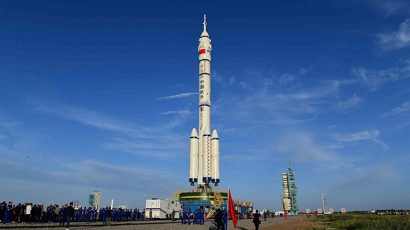

Kína ismert űrhajóitól, például a Shenzhou és a Tiangong űrhajótól.
Kína az elmúlt évtizedekben látványos fejlődést ért el az űrkutatás területén, és mára a világ egyik vezető űrnagyhatalmává vált. Saját technológiára épülő programjaival gyorsan és céltudatosan halad a hosszú távú emberes űrrepülés és a bolygóközi kutatás irányába.
Kína az elmúlt évtizedekben látványos fejlődést ért el az űrkutatás területén, és mára a világ egyik vezető űrnagyhatalmává vált. Saját technológiára épülő programjaival gyorsan és céltudatosan halad a hosszú távú emberes űrrepülés és a bolygóközi kutatás irányába.
A kínai űrprogram csúcspontja jelenleg a Tiangong űrállomás (Mennyei Palota). Ez a modern, moduláris űrállomás Kína saját kutatóbázisa a világűrben, ahol hosszú távú tudományos kísérleteket és technológiai fejlesztéseket végeznek. A Tiangong biztosítja, hogy Kína függetlenül tudja fenntartani emberes jelenlétét az űrben.
A kínai űrhajók a gyors fejlődés, az önállóság és az ambíció jelképei. Programjaik azt mutatják, hogy az emberiség új fejezete kezdődik az űrkutatás történetében.